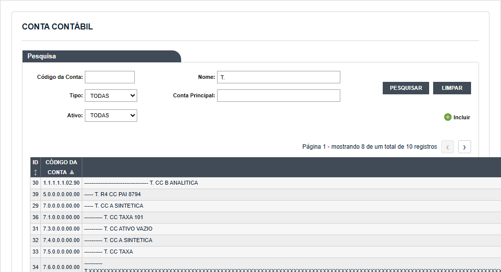
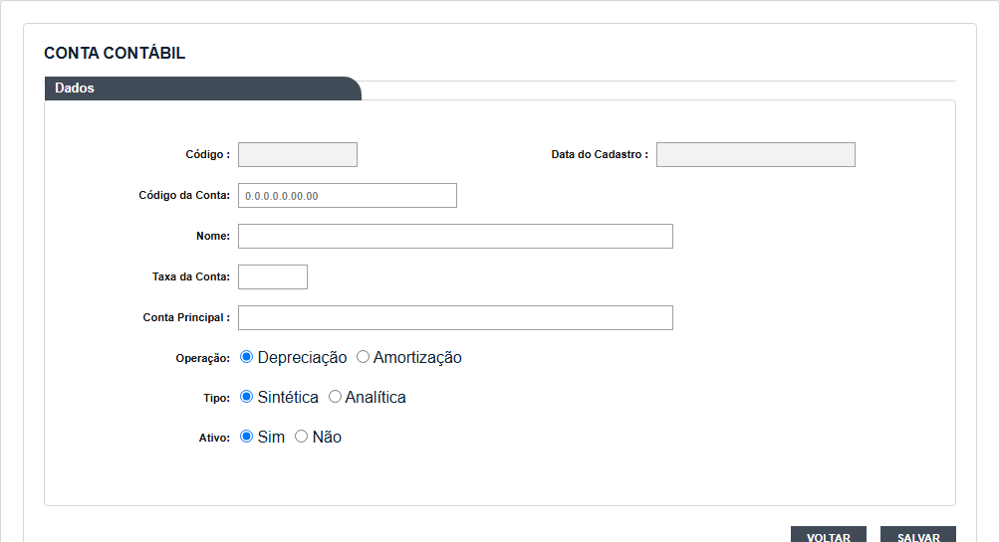
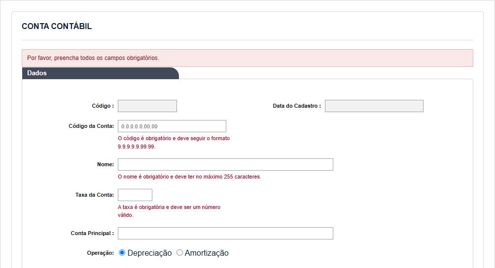
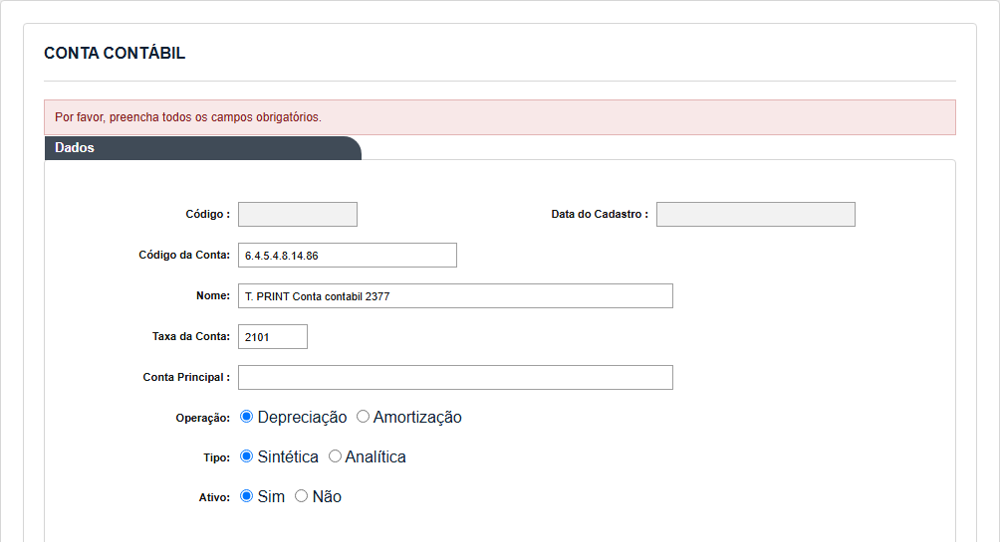
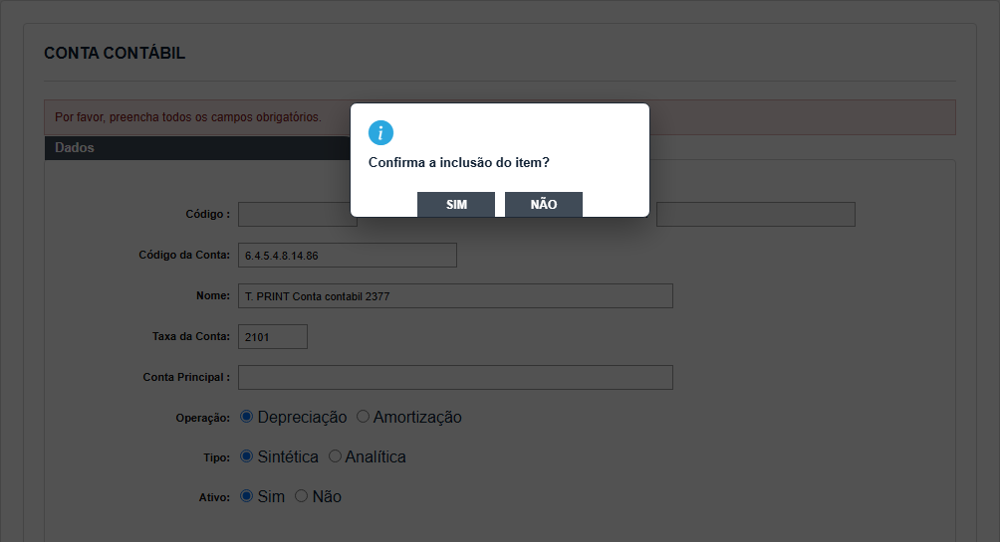
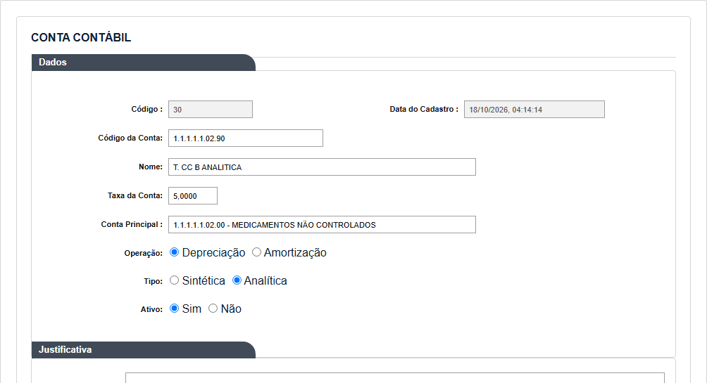
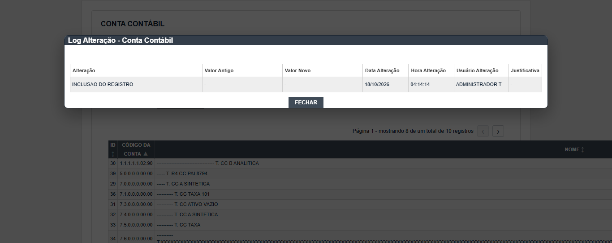

Passo a passo
-
Abrir a tela. No menu do alto escolha CADASTROS e a tela Conta contábil (nome exato do item de submenu: ponto para validar).
-
Pesquisar. No quadro Pesquisa use Código da Conta, Nome, Tipo (TODAS, Sintética ou Analítica; as opções exatas da lista são do legado), Conta Principal (digite e escolha na sugestão) e Ativo, e clique em PESQUISAR. Só existem PESQUISAR, LIMPAR e Incluir: não há Imprimir nem Excel. A grade mostra ID, CÓDIGO DA CONTA e NOME (com traços indicando o nível) e as demais colunas, com paginação ("Página 1 - mostrando 8 de um total de 10 registros" e setas). A pesquisa não ignora acento ("NAO CONTROLADOS" não acha "MEDICAMENTOS NÃO CONTROLADOS").

A imagem mostra os filtros Código da Conta, Nome ("T."), Tipo, Conta Principal e Ativo, os botões PESQUISAR e LIMPAR, o link Incluir, a frase de paginação e as primeiras contas de teste (por exemplo, ID 30, código 1.1.1.1.1.02.90, "T. CC B ANALITICA"), com traços antes do nome (a parte direita da grade fica fora do recorte).
- Incluir. Clique em Incluir. Abre o formulário vazio.

A imagem mostra Código e Data do Cadastro bloqueados, Código da Conta (com o modelo 0.0.0.0.0.00.00), Nome, Taxa da Conta, Conta Principal, Operação (Depreciação marcada, ou Amortização), Tipo (Sintética marcada, ou Analítica) e Ativo (Sim marcado, ou Não), além dos botões VOLTAR e SALVAR. Neste formulário os rótulos não têm asterisco, mas o sistema cobra Código da Conta, Nome e Taxa; Operação, Tipo e Ativo já vêm marcados e, se ninguém escolher, assumem sozinhos Depreciação, Sintética e Sim, sem aviso (DV-PRI-N-033).
- Ver o que o sistema exige. Salvar com os campos vazios mostra a faixa no alto e uma mensagem sob cada campo.

A imagem mostra a faixa "Por favor, preencha todos os campos obrigatórios." e, sob os campos, "O código é obrigatório e deve seguir o formato 9.9.9.9.9.99.99.", "O nome é obrigatório e deve ter no máximo 255 caracteres." e "A taxa é obrigatória e deve ser um número válido.".
- Preencher. Digite o Código da Conta no formato 9.9.9.9.9.99.99 (letras ou código sem a máscara recebem a mesma mensagem de formato), o Nome (até 255 caracteres), a Taxa da Conta (de 0 até 999,9999), a Conta Principal (se a conta não for de primeiro nível), a Operação, o Tipo e o Ativo.

A imagem mostra Código da Conta "6.4.5.4.8.14.86", Nome "T. PRINT Conta contabil 2377", Taxa "2101" (valor propositalmente fora da faixa, para mostrar a recusa do passo 7), Operação Depreciação, Tipo Sintética e Ativo Sim. A faixa vermelha no alto é de uma tentativa anterior da mesma sessão.
- Salvar e confirmar. Clique em SALVAR. Pergunta "Confirma a inclusão do item?"; clique em SIM.

A imagem mostra a janela azul com SIM e NÃO sobre o formulário preenchido.
- Resultado. Com os dados corretos a conta é gravada (o texto exato do aviso de sucesso da inclusão não foi capturado: ponto para validar). Com a taxa fora da faixa, o servidor recusa depois do SIM:
Atenção: apesar do nome do arquivo, esta imagem não mostra sucesso. Ela mostra a faixa "A taxa da conta deve ser um número entre 0 e 999,9999." sobre o formulário com a taxa 2101. A tela de sucesso da inclusão está em "Prints que faltam".
- Abrir um registro. Na grade, clique no lápis (editar). Abre o formulário preenchido e, por baixo, o quadro Justificativa.

A imagem mostra a conta de código 30, cadastrada em 18/10/2026 04:14:14: Código da Conta 1.1.1.1.1.02.90, Nome "T. CC B ANALITICA", Taxa "5,0000", Conta Principal "1.1.1.1.1.02.00 - MEDICAMENTOS NÃO CONTROLADOS", Operação Depreciação, Tipo Analítica, Ativo Sim, e o quadro "Justificativa" (com o campo cortado pela borda da imagem).
-
Alterar e inativar. Mude o que precisar e escreva a Justificativa; sem ela aparece "A justificativa é obrigatória e deve ter no máximo 255 caracteres.". Para inativar, Ativo = Não (também com justificativa). Atenção: inativar uma conta principal que tem filhas ativas é aceito sem aviso (DV-PRI-N-032).
-
Ver o histórico. Clique no ícone de histórico (LOG): janela "Log Alteração - Conta Contábil" com Alteração, Valor Antigo, Valor Novo, Data Alteração, Hora Alteração, Usuário Alteração e, nesta tela, a coluna Justificativa.

Histórico (LOG) da conta contábil · clique para ampliar A imagem mostra a linha "INCLUSAO DO REGISTRO" de 18/10/2026 04:14:14 por "ADMINISTRADOR T", com "-" nos valores antigo e novo e na coluna Justificativa (a inclusão não pede justificativa). Esta é uma das duas telas em que o histórico tem coluna de justificativa.
-
Excluir. No ícone de exclusão da linha, a janela exige justificativa; com ela, a conta sem filhas é excluída e aparece "Conta contábil excluída com sucesso.". Se a conta tem filhas, a exclusão é recusada com mensagem clara: "A conta contábil possui contas filhas e não pode ser excluída.".